tinyclient
One tiny, private app for all your chats.
For macOS on Apple silicon, Linux and Windows · Free and open source
Linux: .deb for Debian and Ubuntu · .rpm for Fedora and openSUSE · AppImage · .tar.gz
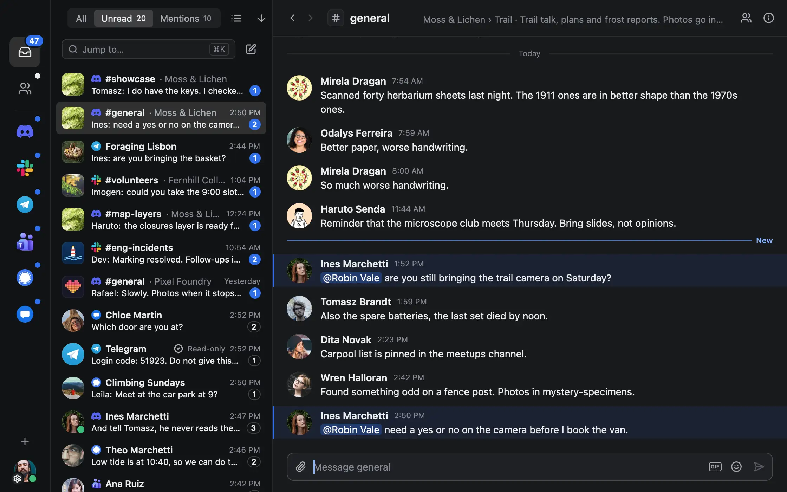
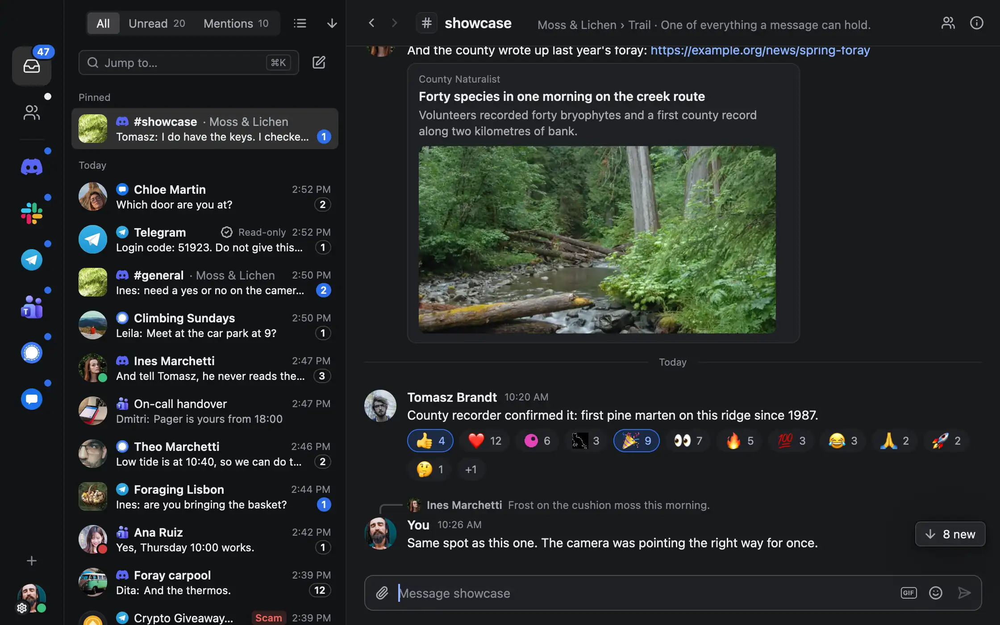
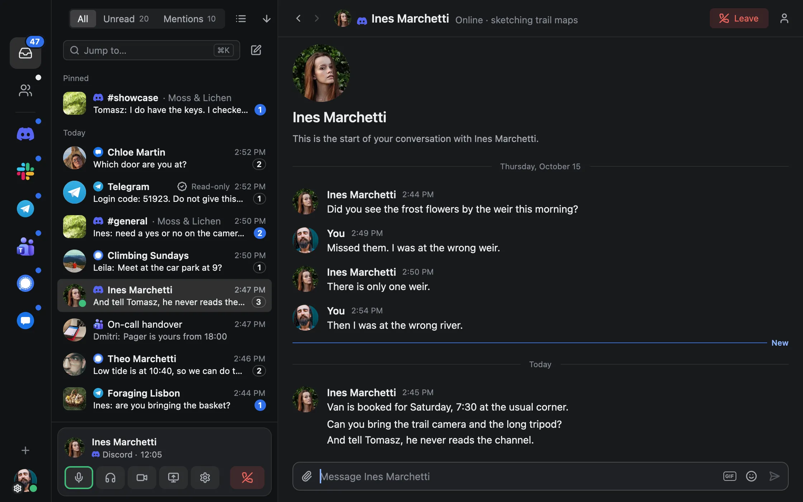
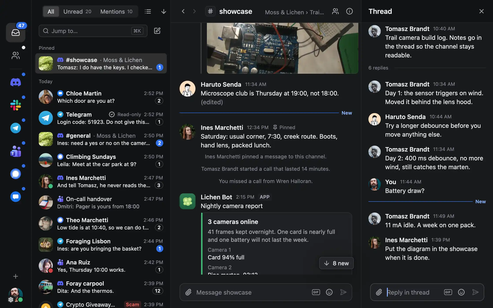
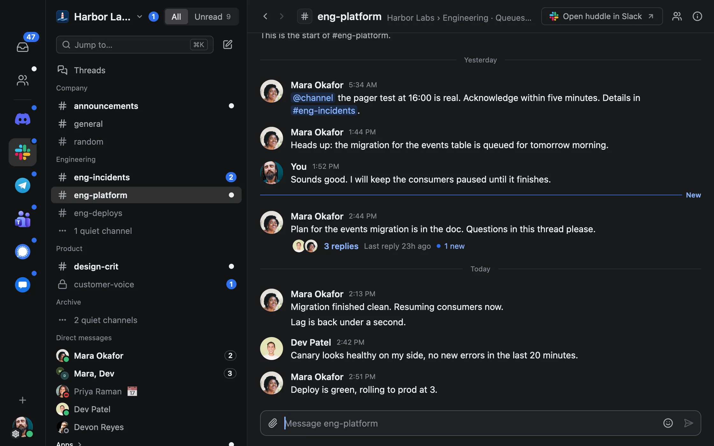
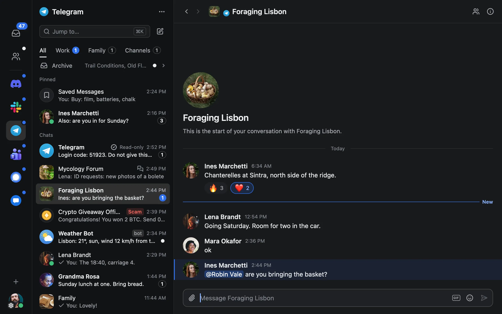
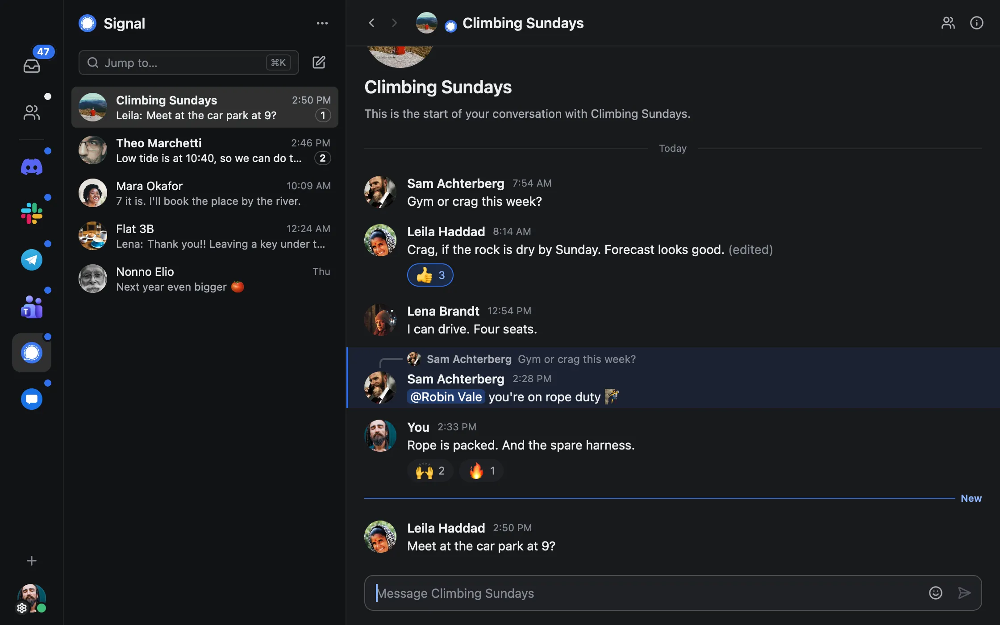
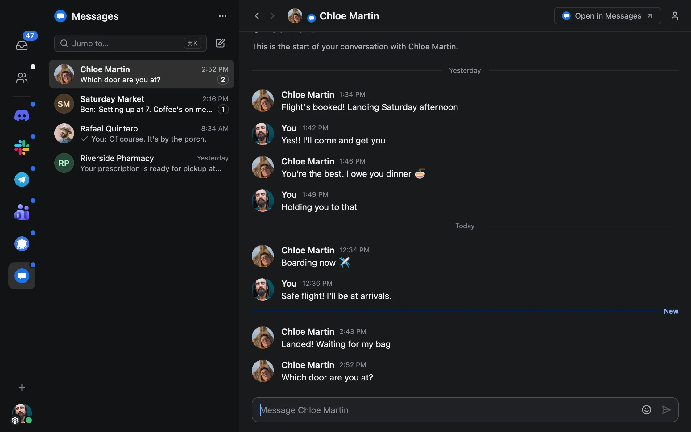
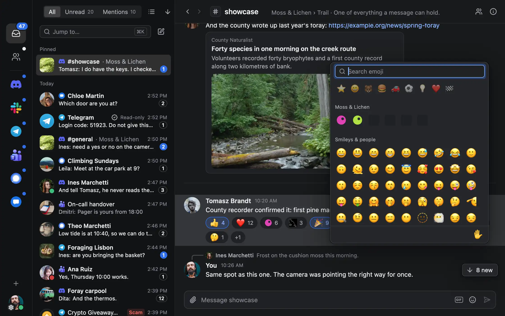
One inbox for every network
The app
The parts you use every day
Reading, replies, reactions and calls work the way each network does them. Anything not built yet opens in the official app, on that item.
-
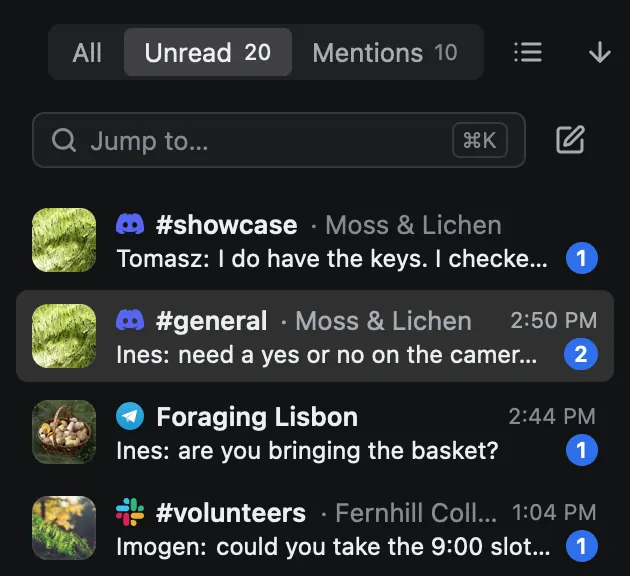
One inbox
Unread from every network in one list, newest first.
-
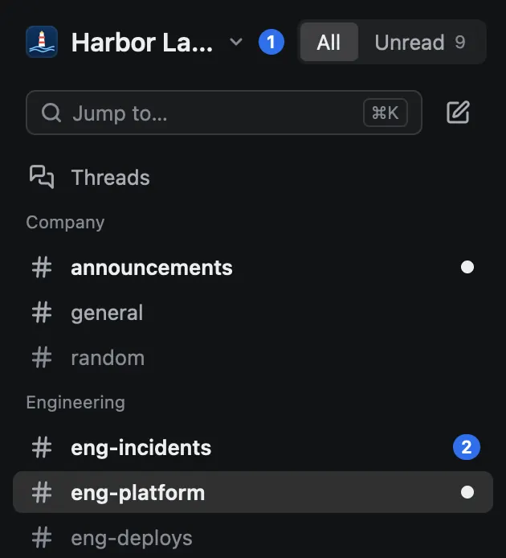
Each network’s own sidebar
Servers, workspaces, folders and teams, the way each network lays them out.
-
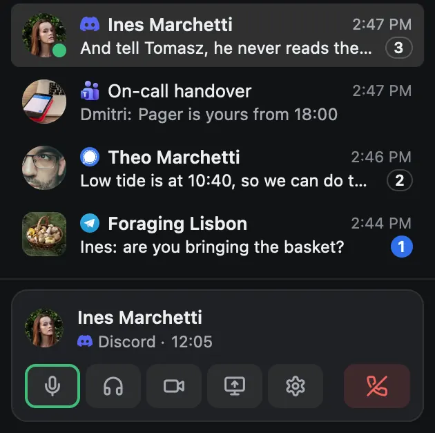
Voice calls
Discord voice in DMs and channels, with Discord’s end-to-end encryption.
-
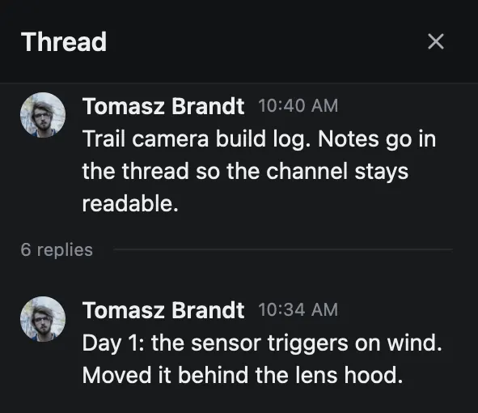
Threads beside the chat
A thread opens in a pane, so the conversation stays where you left it.
-
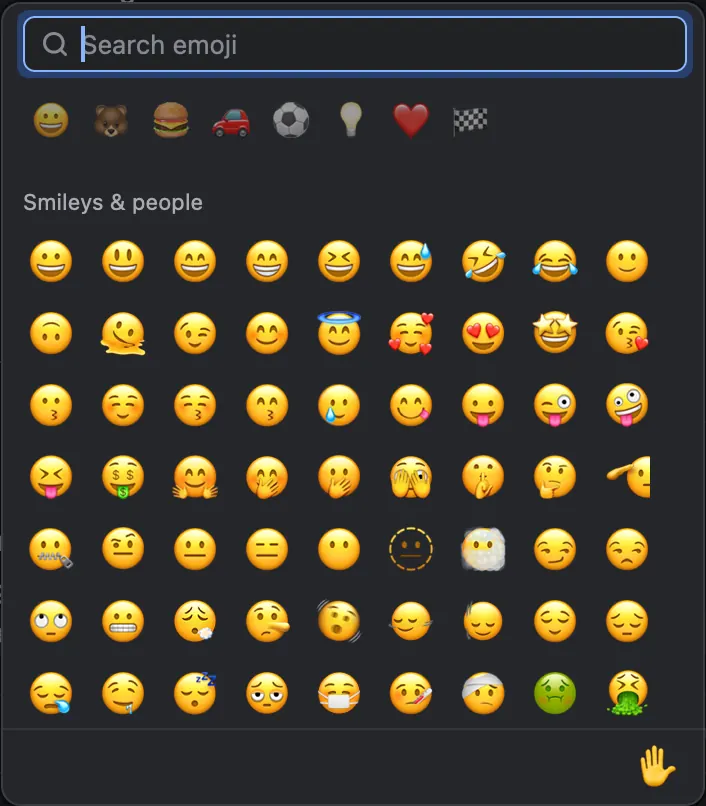
Every emoji
Search them all. In a server, its own emoji come first.
-
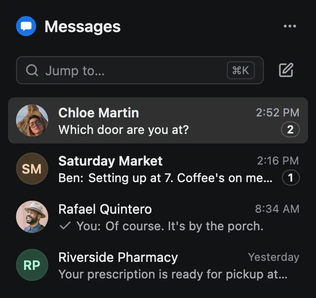
Your phone’s texts
Android Messages, paired the way messages.google.com is. SMS and RCS go through your phone.
Principles
Small on purpose
- TinyNative. Not a browser in a box.
- PrivateNo servers, no accounts, no telemetry.
- SecureSessions live in your OS keychain.
- OpenMIT licensed. Built in public.
Size
Five apps, or one.
The official apps use 1.4 GB of RAM and 3.1 GB of disk. tinyclient uses 57 MB and 55 MB.
In memory
RAM in use while signed in, measured together on an M3 Pro, 14 October 2026. tinyclient is 0.2.0. Activity Monitor’s Memory column, which also counts compressed memory, is 3.9 GB for the five and 91 MB for tinyclient. How we measure →
On disk
App size on disk, macOS, from each vendor’s installer, October 2026. Slack and Telegram ship one app for Apple silicon and Intel; tinyclient’s figure is its Apple silicon build. How we measure →
Keyboard
Built for the keyboard
Jump to any conversation, walk through what’s unread and run a call from the keyboard. On Linux and Windows, Command is Ctrl and Option is Alt.
- Quick Switcher⌘K
- Next unread⌥⇧↓
- Inbox, People⌘1/⌘2
- Back, Forward⌘[/⌘]
- Mark as read⇧Esc
- Mute in a call⇧⌘M
- All shortcuts⌘/
Privacy
Your messages go to the network. Nowhere else.
- No servers
- No telemetry
- Keys in your keychain
Network by network
What works where
The goal is everything the official apps do. Here is where each network stands today.
| Network | Sign in | Reactions | Edit, delete | Files | Voice | Video | Screen share |
|---|---|---|---|---|---|---|---|
| Slack’s web sign-in | Yes | Yes | Yes | Opens Slack | Opens Slack | Opens Slack | |
| Discord’s web sign-in | Yes | Yes | Yes | In tinyclient | Not yet | Not yet | |
| Microsoft sign-in | Yes | Yes | Through OneDrive | Opens Teams | Opens Teams | Opens Teams | |
| QR code or phone number | Yes | Yes | Yes | Opens Telegram | Opens Telegram | Opens Telegram | |
| Linked as a device | Yes | Your own | Named, not shown | Not yet | Not yet | Not yet | |
| Messages | Paired with your phone | Yes | Not yet | Photos shown | On the phone | On the phone | Not offered |
“Opens” means the button takes you to that call in the official app. Not built yet: message search in the window, video and screen share, voice messages, Signal photos, files and calls, and Teams personal accounts.
Before you install
Good questions
Will my computer warn me the first time?
Yes. The macOS app is signed ad hoc, not notarized by Apple: open System Settings › Privacy & Security and choose Open Anyway. The Windows installer is Authenticode-signed. SmartScreen names the publisher and may still stop a new certificate: choose More info › Run anyway. Installing →
Do the networks allow it?
Telegram welcomes third-party clients. Discord’s terms disallow them on user accounts; its enforcement goes after automation, self-bots and spam, and tinyclient automates nothing. Workspaces on Slack and Teams may have their own policy, and an organization can turn third-party sign-ins off on Teams. Networks & terms →
Does it connect to anything besides the networks?
One update check. About once an hour while the window is open, it asks GitHub whether a newer release exists, and sends only tinyclient/<version>. No analytics, no crash upload. Privacy & security →
Is what it stores encrypted?
Sessions live in your system’s keychain, and Signal’s keys are sealed with a key held only there. The message and media cache is not encrypted by tinyclient, so keep your disk encryption on: FileVault, BitLocker or LUKS.
Will I see my old Signal messages?
No. tinyclient links as one more device, like Signal Desktop, and receives what arrives after it is linked. It never registers a phone number.
Is Messages the same as iMessage?
No. It pairs with Google Messages on an Android phone, the way messages.google.com does. The phone stays the account and has to stay online. It is not a second phone number.
Download
Free, with no account to make
-
macOS
Apple silicon, macOS 13 or later. A disk image.
Download for macOS -
Linux
x86_64 and arm64, as .deb, .rpm, AppImage or .tar.gz.
Download for Linux -
Windows
x86_64. An installer that needs no administrator.
Download for Windows
Every release is built by GitHub Actions from the public source. Checksums · All releases · Build it yourself
Early, and built in the open.
We’re building a community around one goal: the best chat client there is, with every feature of the official apps.